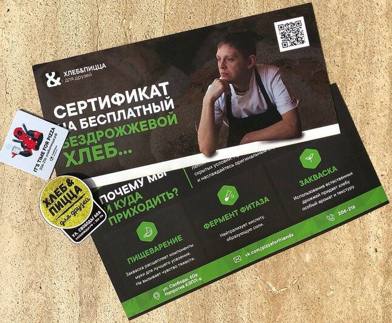

Продолжайте общение с клиентами онлайн
Разместите QR-код в вашем заведении, на визитке или рекламных материалах.Клиенты в два клика смогут подписаться на Страницу бизнеса, добавить мероприятие в календарь, оставить отзыв или подключиться к Wi-Fi.
Сканируются любым
смартфоном
смартфоном
Яркие стикеры
привлекают внимание
привлекают внимание
Не требуют ручного
ввода ссылки
ввода ссылки
Мгновенно открывают
нужную страницу
нужную страницу
Привлекайте подписчиков
Предложите клиентам подписаться на вашу Страницу бизнеса, чтобы быть в курсе акций и новостей — разместите QR-стикер на кассе магазина или столике в кафе.
Узнать подробности

Продолжайте диалог
Упростите общение с клиентами — приглашайте по QR-коду в общий чат или закрытую группу.
Узнать подробностиВоплощайте
смелые идеи
Используйте QR-коды в креативных механиках: квестах, конкурсах или секретных акциях.
Узнать подробности

Обменивайтесь контактами
Создайте QR-код со ссылкой на личный профиль для визитки или презентации — партнёры легко вас найдут.
Узнать подробностиСледите за статистикой
Анализируйте, сколько человек отсканировали QR-код и совершили важное действие: перешли по ссылке, добавили в календарь или подписались на Страницу бизнеса.
Узнать подробности
Выберите нужную ссылку
Скопируйте её из адресной строки браузера и вставьте в поле ниже.
Создайте дизайн
Оформите QR-стикер в вашем фирменном стиле и добавьте деталей.
Скачайте и распечатайте
Закажите печать стикера в типографии или распечатайте на обычном принтере.
Размещайте QR-коды где угодно
Витрина, листовка, страница
журнала — QR-код сработает везде.

QR-коды для офлайн-продвижения
Кафе «Хлеб и пицца» разработали листовки, которые распространяют по соседним домам. Благодаря напечатанным на них QR-кодам клиенты в два клика могут найти их Страницу бизнеса и подписаться на неё, чтобы всегда быть в курсе акций и новостей.
«На листовках мы размещаем QR-код на нашу Страницу бизнеса, который теперь можно создавать прямо ВКонтакте. В результате нашей акции из 4000 листовок обратно вернулось более 40%, и многие жители ближайших домов попробовали нашу пиццу и фирменный хлеб»
Никита Лисков, SMM–специалист кафе «Хлеб и Пицца для друзей»
QR-коды для офлайн-продвижения
Кафе «Хлеб и пицца» разработали листовки, которые распространяют по соседним домам. Благодаря напечатанным на них QR-кодам клиенты в два клика могут найти их Страницу бизнеса и подписаться на неё, чтобы всегда быть в курсе акций и новостей.
«На листовках мы размещаем QR-код на нашу Страницу бизнеса, который теперь можно создавать прямо ВКонтакте. В результате нашей акции из 4000 листовок обратно вернулось более 40%, и многие жители ближайших домов попробовали нашу пиццу и фирменный хлеб»
Никита Лисков, SMM–специалист кафе «Хлеб и Пицца для друзей»
QR-коды для офлайн-продвижения
Кафе «Хлеб и пицца» разработали листовки, которые распространяют по соседним домам. Благодаря напечатанным на них QR-кодам клиенты в два клика могут найти их Страницу бизнеса и подписаться на неё, чтобы всегда быть в курсе акций и новостей.
«На листовках мы размещаем QR-код на нашу Страницу бизнеса, который теперь можно создавать прямо ВКонтакте. В результате нашей акции из 4000 листовок обратно вернулось более 40%, и многие жители ближайших домов попробовали нашу пиццу и фирменный хлеб»
Никита Лисков, SMM–специалист кафе «Хлеб и Пицца для друзей»
QR-коды для офлайн-продвижения
Кафе «Хлеб и пицца» разработали листовки, которые распространяют по соседним домам. Благодаря напечатанным на них QR-кодам клиенты в два клика могут найти их Страницу бизнеса и подписаться на неё, чтобы всегда быть в курсе акций и новостей.
«На листовках мы размещаем QR-код на нашу Страницу бизнеса, который теперь можно создавать прямо ВКонтакте. В результате нашей акции из 4000 листовок обратно вернулось более 40%, и многие жители ближайших домов попробовали нашу пиццу и фирменный хлеб»
Никита Лисков, SMM–специалист кафе «Хлеб и Пицца для друзей»
Проверьте QR-код
Отсканируйте его и убедитесь, что попадаете на верную страницу.
Как вставить нужную ссылкуСледите за размером
Чтобы камера смартфона легко распознала QR-код, делайте его не менее 2 см.
Как правильно распечататьРазместите на видном месте
QR-стикер должен быть заметным и удобным для сканирования — размещайте его на видном месте.
Как выбрать место для стикераСделайте ваш QR-стикер уникальным
Выберите фирменные цвета и разместите логотип, чтобы клиентам было проще вас заметить.
Готовы создать свой уникальный QR-код? Тогда вперёд!
Создать QR–код